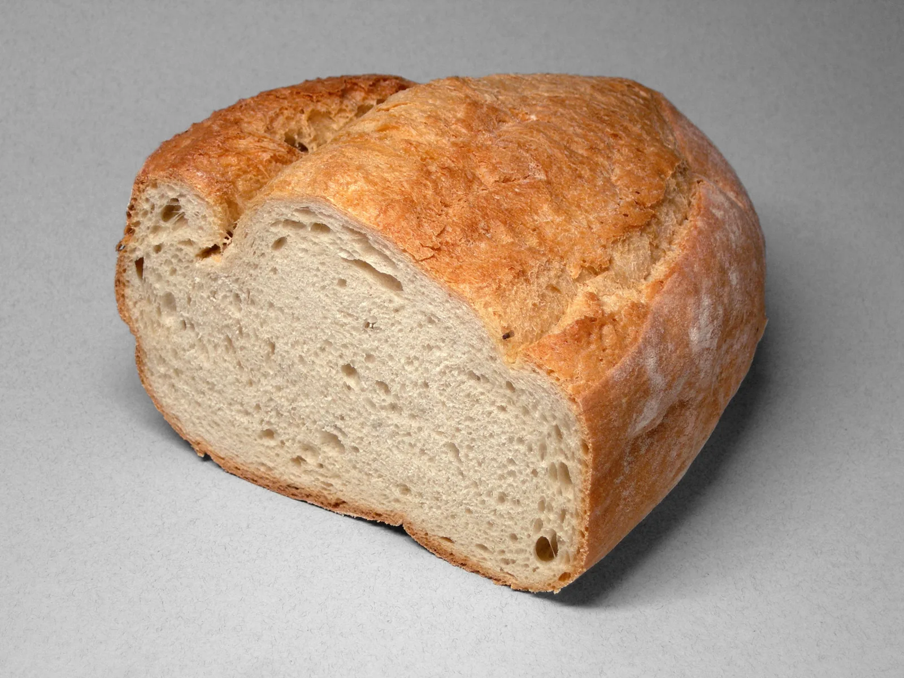

Ein elastisches Gerüst
Das beim Kneten entstehende Glutengerüst hält Gasbläschen fest. So bekommt Weizenbrot sein Volumen.
Brotporträt 01 / 07
Goldene Kruste. Helle Krume. Ein Brot für jeden Tag.
Die Geschichte entdecken
Herkunft & Geschichte
Die Geschichte des Weizenbrotes beginnt mit dem Anbau früher Weizenarten in Vorderasien. Aus einfachen Getreidefladen entwickelten sich im Lauf der Jahrtausende gelockerte Brote. Einen einzelnen Erfinder oder einen eindeutigen Ursprungsort des heutigen Weizenbrotes gibt es deshalb nicht.
Weizen eignet sich besonders gut für luftige Brote: Beim Kneten bildet sein Klebereiweiß ein elastisches Gerüst, das die Gärgase festhält. Heute findet man Weizenbrot in vielen Formen – als runden Laib, Kastenbrot oder längliches Weißbrot. Gerade im Mittelmeerraum gehört helles Brot selbstverständlich auf den Tisch.
Zum Weiterlesen: Plötzblog: Einteilung der Brotsorten ↗Zuletzt aufgerufen am
Von außen nach innen
Frische Butter, milder Käse oder selbst gemachte Marmelade lassen dem feinen Brotgeschmack Raum.
Eine Scheibe Wissen
Das beim Kneten entstehende Glutengerüst hält Gasbläschen fest. So bekommt Weizenbrot sein Volumen.
Ein freigeschobener Laib hat mehr Krustenfläche als ein Kastenbrot. Das verändert das Verhältnis von Kruste und Krume.
Weizenbrot muss kein reines Hefebrot sein. Ein Weizensauerteig kann für Lockerung und ein vielschichtiges Aroma sorgen.
Vom Lesen zum Backen
Ein unkompliziertes Kastenbrot mit Weizenmehl und Trockenhefe. Das passende Rezept „Einfaches Weizenbrot“ findest du auf Chefkoch.
Rezept auf Chefkoch ansehen ↗Externe Rezeptseite · öffnet in einem neuen TabZuletzt aufgerufen am